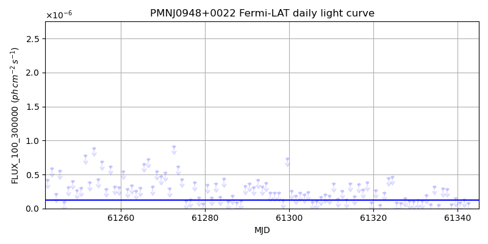
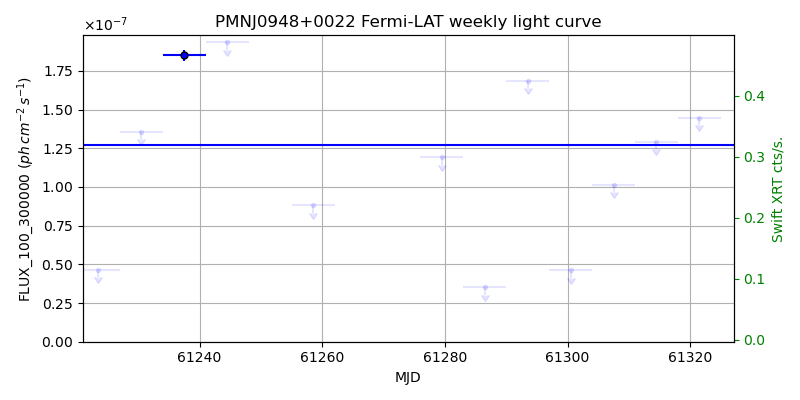
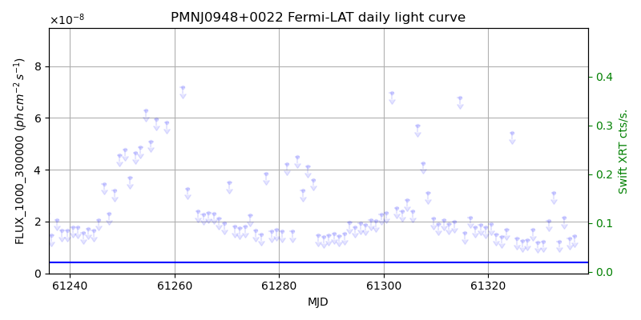
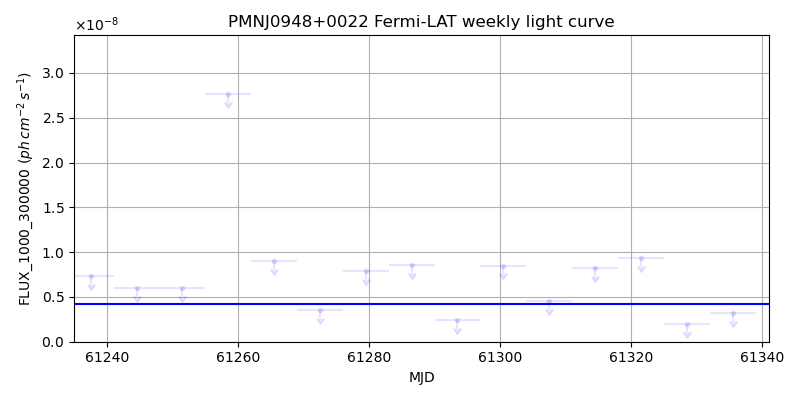

LAT Lightcurve site: https://fermi.gsfc.nasa.gov/ssc/data/access/lat/msl_lc/source/PMN_J0948p0022
Swift site: https://www.swift.psu.edu/monitoring/source.php?source=PMNJ0948+0022
NED: Query
Time of last update of this page: UT: 2026-10-17 15:21 (MJD: 61330.640)
| Property | Value |
|---|---|
| R.A. | 9:48:57.36 |
| Dec. | 0:22:26.4 |
| z | 0.584 |
| 3FGL SpectrumType | LogParabola |
| 3FGL PL Index | |
| 3FGL Flux_100_300000 | 1.27e-07 1 / (s cm2) |
| 3FGL Flux_1000_300000 | 4.19e-09 1 / (s cm2) |
| 3FGL Flux >200 GeV | 3.67e-14 1 / (s cm2) |
| 3FGL Extrap. Crab >200 GeV | 0.00 |
| 3FGL Flux After EBL Absorption >200GeV | 5.90e-15 1 / (s cm2) |
| 3FGL EBL Crab Fraction >200GeV | 0.00 |

| MJD | dMJD | Flux | dFlux | Frac3FGL | FracCrab>200GeV | EBLFracCrab>200GeV |
|---|---|---|---|---|---|---|
| 61325.50 | 0.50 | 8.67e-08 | 0.00e+00 | 0.00 | 0.00 | 0.00 |
| 61326.50 | 0.50 | 7.84e-08 | 0.00e+00 | 0.00 | 0.00 | 0.00 |
| 61327.50 | 0.50 | 1.49e-07 | 0.00e+00 | 0.00 | 0.00 | 0.00 |
| 61328.50 | 0.50 | 1.14e-07 | 0.00e+00 | 0.00 | 0.00 | 0.00 |
| 61329.50 | 0.50 | 1.05e-07 | 0.00e+00 | 0.00 | 0.00 | 0.00 |

| MJD | dMJD | Flux | dFlux | Frac3FGL | FracCrab>200GeV | EBLFracCrab>200GeV |
|---|---|---|---|---|---|---|
| 61293.50 | 3.50 | 1.69e-07 | 0.00e+00 | 0.00 | 0.00 | 0.00 |
| 61300.50 | 3.50 | 4.63e-08 | 0.00e+00 | 0.00 | 0.00 | 0.00 |
| 61307.50 | 3.50 | 1.02e-07 | 0.00e+00 | 0.00 | 0.00 | 0.00 |
| 61314.50 | 3.50 | 1.29e-07 | 0.00e+00 | 0.00 | 0.00 | 0.00 |
| 61321.50 | 3.50 | 1.45e-07 | 0.00e+00 | 0.00 | 0.00 | 0.00 |

| MJD | dMJD | Flux | dFlux | Frac3FGL | FracCrab>200GeV | EBLFracCrab>200GeV |
|---|---|---|---|---|---|---|
| 61325.50 | 0.50 | 1.34e-08 | 0.00e+00 | 0.00 | 0.00 | 0.00 |
| 61326.50 | 0.50 | 1.26e-08 | 0.00e+00 | 0.00 | 0.00 | 0.00 |
| 61327.50 | 0.50 | 1.30e-08 | 0.00e+00 | 0.00 | 0.00 | 0.00 |
| 61328.50 | 0.50 | 1.69e-08 | 0.00e+00 | 0.00 | 0.00 | 0.00 |
| 61329.50 | 0.50 | 1.21e-08 | 0.00e+00 | 0.00 | 0.00 | 0.00 |

| MJD | dMJD | Flux | dFlux | Frac3FGL | FracCrab>200GeV | EBLFracCrab>200GeV |
|---|---|---|---|---|---|---|
| 61293.50 | 3.50 | 2.38e-09 | 0.00e+00 | 0.00 | 0.00 | 0.00 |
| 61300.50 | 3.50 | 8.47e-09 | 0.00e+00 | 0.00 | 0.00 | 0.00 |
| 61307.50 | 3.50 | 4.56e-09 | 0.00e+00 | 0.00 | 0.00 | 0.00 |
| 61314.50 | 3.50 | 8.24e-09 | 0.00e+00 | 0.00 | 0.00 | 0.00 |
| 61321.50 | 3.50 | 9.32e-09 | 0.00e+00 | 0.00 | 0.00 | 0.00 |
--------------------------------------------------------- Using user-supplied coords: 9:48:57.36 0:22:26.4 2000 --------------------------------------------------------- FLWO UT night of: 2026-10-18 Local Sid. @ Midnight: 01:23 Sunset (-15.0) (local, UT): 18:56 01:56 Sunrise (-15.0) (local, UT): 05:22 12:22 Moonrise (local, UT): Moonset (local, UT): 22:59 05:59 Moon phase: 0.47 --------------------------------------------------------- AzTime LSID UT Obj_el Obj_az Mn_el Mn_az Sep. --------------------------------------------------------- 18:56 20:18 01:56 -51.4 321.4 30.5 195.3 135.5 19:26 20:48 02:26 -54.9 332.5 28.5 202.5 135.7 19:56 21:18 02:56 -57.2 345.4 25.9 209.3 135.8 20:26 21:48 03:26 -58.1 359.4 22.6 215.6 136.0 20:56 22:19 03:56 -57.4 13.4 18.8 221.3 136.2 21:26 22:49 04:26 -55.2 26.4 14.5 226.6 136.4 21:56 23:19 04:56 -51.8 37.7 9.9 231.4 136.6 22:26 23:49 05:26 -47.4 47.2 5.0 235.7 136.8 22:56 00:19 05:56 -42.5 55.1 0.2 239.8 137.0 23:26 00:49 06:26 -37.0 61.9 -5.5 243.5 137.3 23:56 01:19 06:56 -31.2 67.7 -11.3 247.0 137.5 00:26 01:49 07:26 -25.2 72.8 -17.0 250.4 137.8 00:56 02:19 07:56 -19.0 77.4 -22.8 253.6 138.0 01:26 02:49 08:26 -12.7 81.7 -28.7 256.7 138.3 01:56 03:19 08:56 -6.2 85.8 -34.7 259.8 138.6 02:26 03:49 09:26 0.5 89.7 -40.7 263.0 138.9 02:56 04:20 09:56 6.6 93.7 -46.8 266.4 139.2 03:26 04:50 10:26 12.9 97.8 -52.8 270.1 139.5 03:56 05:20 10:56 19.2 102.0 -58.9 274.3 139.8 04:26 05:50 11:26 25.4 106.6 -64.9 279.6 140.1 04:56 06:20 11:56 31.4 111.7 -70.8 287.0 140.5 05:22 06:46 12:22 36.4 116.7 -75.7 297.1 140.7 --------------------------------------------------------- Dark hours >55 deg.: 0.00